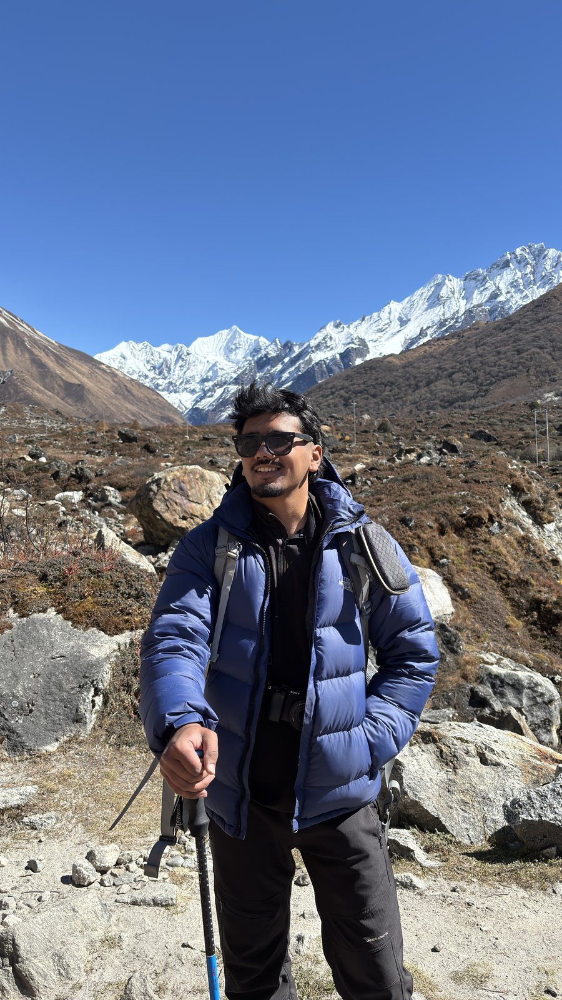

SANDESH
JUNG
KUNWAR — AI/ML Engineer based in Kathmandu, Nepal
Notes on Building Systems for Language, Retrieval & Reasoning
AI/ML Engineer building intelligent systems — from model training to production interfaces.
About
Index — 02
Er. Sandesh Jung Kunwar
AI/ML Engineer, Kathmandu, Nepal
I'm an AI/ML engineer based in Kathmandu, Nepal. I build AI systems end to end — LLM training and evaluation, retrieval-augmented generation, and agent orchestration — along with the production services and interfaces that carry them.
I've built and evaluated code generation agents, multi-agent workflows and RLHF-based model evaluations, and shipped products of my own, including a platform used by 300+ people.
What interests me most is the gap between a model that works in a notebook and a system that works in production: retrieval quality, evaluation harnesses, guardrails, and the tooling agents actually run on.
- sandeshjkunwar@gmail.com
- Phone
- +977 984-9912870
- Location
- Godawari, Lalitpur, Nepal
AI Systems
LLM training, evaluation and RLHF-driven alignment work.
RAG & Agents
Retrieval pipelines, LangGraph workflows, multi-agent systems.
Production Web
React, FastAPI and the services that put models in front of people.
Applied Research
Transformer internals, tokenizers, speech & vision models.
Work Experience
Index — 03Co-founder — CreatorKhoj
- Co-founded an MVP platform connecting brands with content creators for campaign discovery and collaboration; designed the end-to-end system architecture including auth, campaign management and admin workflows.
- Worked closely with creators and brands to gather feedback and prioritize features.
- Onboarded 300+ content creators within the first month and facilitated early brand collaborations.
AI Engineer — Lazarus Studio
- Designed and implemented AI agent orchestration for social-media automation using multi-agent workflows, tool calling, structured outputs and state management.
- Integrated LLM agents with external services and APIs to automate multi-step tasks, with workflow control and validation throughout.
Advanced AI Data Trainer — Invisible Technologies
- Delivered prompt-engineered feedback and built targeted datasets and coding tasks to align LLM outputs with full-stack development standards, improving reasoning, code generation and agent performance.
- Developed Docker-based execution environments and evaluated AI-powered web development agents (Firebase Studio Prototyper, Jules) through structured coding tasks and human feedback.
- Maintained documentation for evolving project scopes and mentored new team members on evaluation techniques.
AI Annotator — Mindrift (Toloka AI)
- Evaluated LLM outputs using RLHF methodologies and comparative response ranking; assessed AI agent reasoning across multi-step workflows.
- Evaluated AI-generated images and videos for realism, consistency and motion quality.
Associate Software Engineer, AI — Bajra Technologies
- Built reports and API integrations within the Odoo ERP ecosystem for HRMS workflows; boosted an in-house speaker recognition model's accuracy from ~20% to ~86% on 2/3 subsets.
- Researched and developed Nepali LLM training and inference pipelines using PyTorch Lightning and Hugging Face, with custom tokenizers and large-scale scraped Nepali text data.
- Contributed to an agentic assessment platform using LangGraph; maintained production apps such as Lekhandas (App Store) and mentored new AI team members.
AI/ML Developer, NLP — Tech Beetle Technology
- Designed and implemented RAG pipelines, integrating vector retrieval, LLM inference and prompt engineering to improve chatbot accuracy.
- Collaborated with clients on LLM-powered chatbots, cutting customer service response time by 30%.
AI Fellowship — Fusemachines Pvt. Ltd
- Developed ML models for house price prediction using regression and feature engineering; explored satellite image-to-map conversion using GANs.
- Completed NLP and CV coursework, applied to an interactive conversational agent.
Data Science Intern — NIC Asia, Trade Tower
- Built an MVP to extract citizenship and driving license information from onboarding documents using neural network architectures.
- Conducted business analysis and solution design for banking AI initiatives.
Technical Skills
Index — 04AI & Machine Learning
Languages
Frameworks & Libraries
Tools & Platforms
Selected Projects
Index — 05AI Customer Operations
An event-driven platform where two LangGraph agents monitor delayed orders and triage support tickets — investigating with tool calls, then either acting automatically or queueing the decision for human approval.
- Hybrid BM25 + vector retrieval fused with reciprocal rank fusion
- Prompt-injection guardrails and human-in-the-loop approval
- OpenTelemetry tracing, cost accounting and an evaluation harness
FastAPI · LangGraph · Postgres · Redis Streams · Qdrant · Docker
Reproduce GPT-2
Reimplemented Andrej Karpathy's educational GPT-2 architecture to understand transformer internals and autoregressive training.
Transformers · PyTorch
Nepali Tokenizer
Designed and trained custom tokenizers using large-scale Nepali text scraped from online newspapers.
NLP · Nepali LLM
GRPO
A lightweight implementation of Group Relative Policy Optimization for efficient RL-based LLM fine-tuning.
RLHF · Fine-tuning
Obstacle Detection for the Visually Impaired
Led development of an IoT and computer-vision assistive system using transfer learning.
Computer Vision · IoT
Machine Learning Foundation
A collection of ML notebooks covering mathematical foundations, algorithms and practical experiments.
ML · Notebooks
Writing & Notes
Index — 06Stop Chasing the Best LLM — Find the Bottleneck Instead
AI Agents · LLMs
Iron Man's Jarvis Is Almost Ready — And It Explains the Evolution of AI
AI · Machine Learning
Building an Agentic RAG System from Scratch
AI Agents · Generative AI
Agentic RAG vs. RAG: Why Your Retrieval Pipeline Needs to Start Reasoning
AI Agents · Chatbots
Functions in JavaScript
JavaScript
JavaScript Hoisting
JavaScript
Education
Index — 07Bachelor of Engineering, Computer Engineering
Himalaya College of Engineering, Institute of Engineering · IOE Partial Scholarship
Higher Secondary Education, Science
Kathmandu Model College, National Examination Board
School Leaving Certificate
St. Xavier's School
Frequently Asked
Index — 08Who is Sandesh Jung Kunwar?
Sandesh Jung Kunwar is an AI/ML engineer based in Kathmandu, Nepal. He works across LLM training and evaluation, retrieval-augmented generation (RAG), AI agent orchestration, and the production systems that carry them, and is currently co-founder of CreatorKhoj.
What does an AI/ML engineer in Nepal do?
An AI/ML engineer builds and ships machine learning and AI systems end to end: training and evaluating models, building retrieval and agent pipelines, and integrating them into production applications. Sandesh has done this for LLM alignment, RAG chatbots, multi-agent workflows and full-stack products.
Where is Sandesh Jung Kunwar based?
He's based in Lalitpur, in the Kathmandu Valley, Nepal, and works remotely with teams internationally.
Is Sandesh Jung Kunwar available for AI/ML engineering roles?
Yes — he's open to AI/ML engineering opportunities, both remote and in Nepal. Reach him at sandeshjkunwar@gmail.com.
What technologies does he work with?
Python, PyTorch, Hugging Face Transformers, LangChain and LangGraph, FastAPI, React, and AWS — applied to LLMs, RAG pipelines, AI agents and production web applications.
Let's build something intelligent.
sandeshjkunwar@gmail.com- Phone
- +977 984-9912870
- Location
- Godawari-3, Lalitpur, Nepal
- GitHub
- github.com/sandeshjung
- in/sandeshjung
- Medium
- @sandeshjung